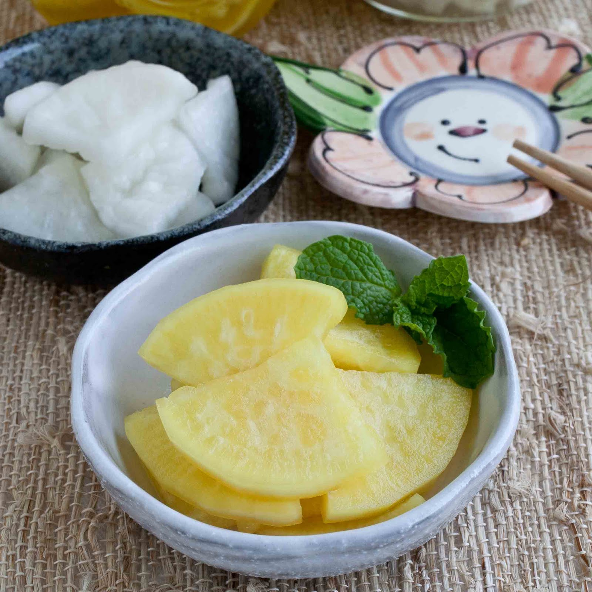

Description
I love pickles and Takuan is one of my favorite japanese pickles. Here is a recipe that I found online!
5 daikon (long white radish) about 9 cups, sliced
3 tablespoons salt
3-3/4 cups sugar
1 cup white vinegar
yellow food coloring
Steps
Wash and peel daikon. Slice into thin pieces. Mix salt, sugar and vinegar. Then add daikon to this mixture. Soak over night, stirring occasionally.
Squeeze daikon and pack into jars.
Boil juice and add a few drops of yellow food coloring. While boiling, remove scum and boil until it is clear. Cool. Pour juice into jars. Refrigerate. Takuwan should be ready to eat in two weeks.